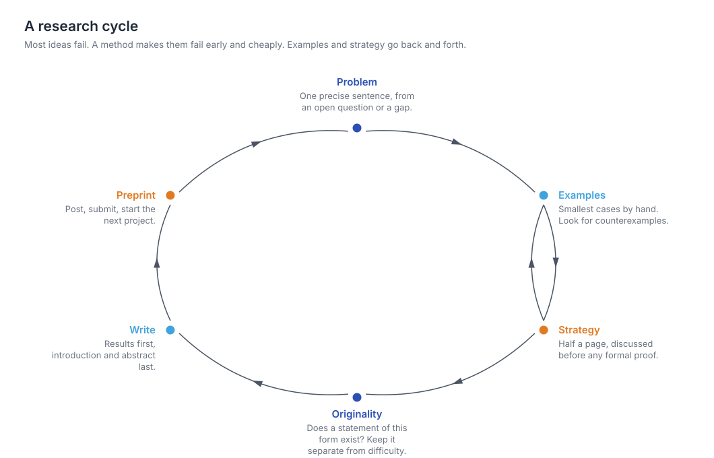

Guides · Method
A research method, from the first idea to the preprint
Choosing a problem, working in examples, discussing the strategy before writing proofs, checking originality, keeping a research log, and writing to other researchers about their work.

Research is not a straight line from idea to paper. It is a cycle: read, try, fail, understand, try again. A method does not make the ideas come, but it makes sure that good ideas are not lost and that bad ones are abandoned early.
1. Choose a problem you can finish
A good first problem is precise, connected to active work, and small enough to finish in a few months. Good sources:
- Questions stated explicitly in recent papers, often in the introduction or in a final section on open problems.
- A known result in a special case that nobody has extended. Ask why: sometimes it is hard, sometimes nobody tried.
- A hypothesis that a proof uses only once. Can it be weakened?
- Two areas that use the same objects with different methods.
Write the problem down in one sentence. If you cannot, it is not yet a problem.
2. Work in examples first
Before looking for a general proof, compute the smallest non-trivial examples by hand, and the next ones with a computer if needed. Examples tell you whether the statement is true, which hypotheses are needed, and often how the proof should go. A counterexample found in the first week is a gift.
3. Discuss the strategy before writing proofs
When you believe you have a proof, do not write it in full LaTeX yet. Write a half-page outline:
- the statement, with all hypotheses,
- the two or three key steps,
- the known results each step uses, with exact references,
- the step you are least sure about.
Discuss this outline with your supervisor or co-authors. Most mistakes are found at this stage, cheaply. Write the formal proof only once the strategy has survived the discussion.
4. Check originality early and honestly
Before investing months, check that the result is not already known.
- Search arXiv, Google Scholar and the reviewing databases with several formulations of the statement.
- Read the papers that cite the closest known results.
- Ask an expert.
Separate two questions that are often confused:
- Does a statement of this form already exist in the literature? If no paper contains it, the result is new, even if its proof combines known ingredients.
- How difficult is the proof, and what does it use? A short proof from known tools can still be a new and useful result. Be honest about it in the introduction.
5. Keep a research log
Keep a dated log of what you tried, what failed and why. Failed approaches are information: they tell you, and later your readers, why the obvious method does not work. A simple text file or notebook is enough. Keep with it your reading sheets and a list of open questions.
A tool such as VanoAtlas can hold projects, tasks, meetings, notes and papers in one private place on your computer, but any consistent system works. The point is to write things down the day they happen.
6. Meet regularly
A short weekly meeting with your supervisor or co-authors, prepared in advance, is worth more than a long meeting every two months. Bring one page: what you did, what is blocked, what you plan next, and one precise question.
7. Writing to other researchers about their work
Writing to the author of a paper is normal and often welcome: to ask a question, to report a possible problem, or to share an application of their result. A good email is short, kind and concrete.
- Start with their work, not with yourself. "I recently read your paper '…' with great interest." Your email address and signature already say who you are.
- Start from a concrete example. Explain that you tried to apply their result to a specific case. Put the detailed computation in a short PDF attached to the email, without title page or sections, just the example.
- Phrase observations humbly. "If I compute correctly, …", "I may be missing something, but …". Never write as if their work were wrong, even when you think there is an error. You may be the one who is mistaken, and if not, they will appreciate the courtesy.
- Ask one clear question in the body of the email.
- Keep it short. A few paragraphs. Formulas in simple LaTeX notation are fine.
Dear Professor …,
I recently read your paper "…" with great interest. I tried to apply Theorem 3.1 to the case of …, and I attach a short note with the computation.
If I compute correctly, the condition (2.4) fails in this example, while the conclusion of the theorem seems to hold. I may be missing something in the hypotheses. Could the condition be replaced by …, or is there a reason it is needed here?
Thank you very much for your time.
Best regards, …
8. Read and review as training
Writing short reviews of recent papers (for example for zbMATH Open or MathSciNet in mathematics) and refereeing for journals are excellent training. You learn to read fast, to identify the main contribution of a paper in a few lines, and to see the common weaknesses that you will then avoid in your own papers.
9. Finish
A finished, correct, modest paper is worth more than a brilliant unfinished one. Set a date, write the paper, post the preprint, and start the next project while the first one is under review.
In short
- The problem fits in one precise sentence.
- The smallest examples are computed by hand.
- The strategy is discussed before any formal proof is written.
- Originality is checked, and kept separate from difficulty.
- A dated research log records what failed and why.
- Emails to other researchers are short, concrete and humble.
- The paper is finished and posted, and the next project has started.